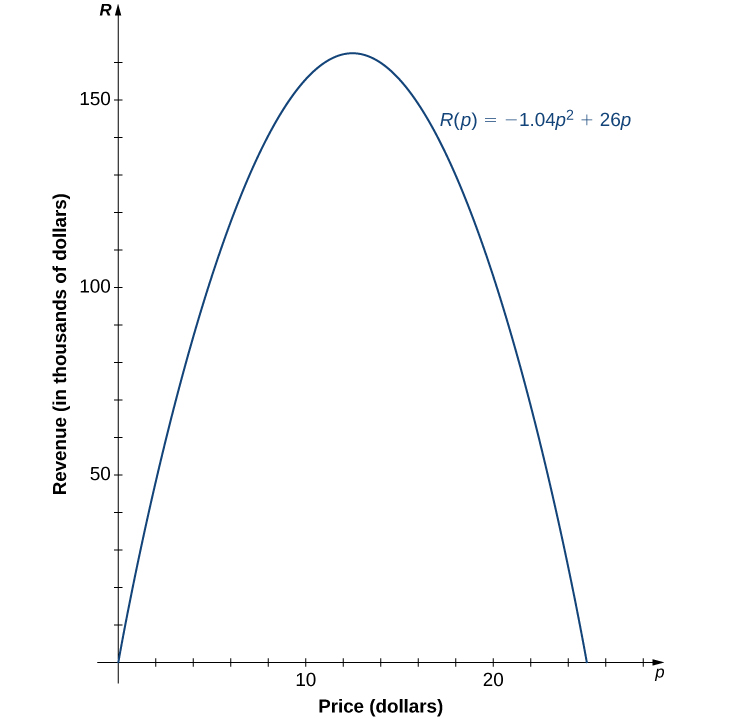

Section 1.3 Mathematical Modeling
Learning Objectives.
Discuss linear mathematical models for cost, revenue, profit, supply, and demand functions.
Find and analyze the break-even quantity and equilibrium point.
Discuss quadratic mathematical models.
Find and analyze the vertex point of a quadratic function.
Optimize cost, revenue, and profit functions.
Note: This is an additional section added to this custom version of the book. It was written by Kim Savinon.
A large variety of real-world situations can be described using mathematical models. A mathematical model is a method of simulating real-life situations with mathematical equations. Physicists, engineers, economists, and other researchers develop models by combining observation with quantitative data to develop equations, functions, graphs, and other mathematical tools to describe the behavior of various systems accurately. Models are useful because they help predict future outcomes. Examples of mathematical models include the study of population dynamics, investigations of weather patterns, and predictions of product sales.
Subsection 1.3.1 Mathematical Models of Cost, Revenue, and Profit
Given \(x\) the number of units produced, the cost function \(C(x)\) outputs the amount a business or company must pay in order to produce \(x\) units. There are typicically two types of costs: fixed and variable. In a linear cost model, the cost function is expressed as
where \(m\) is the cost per unit also referred to as the variable or marginal cost. Here, the variable cost term \(mx\) depends on the number of units produced. Some examples of variable/marginal costs are labor, material, or manufacturing costs. Additionally, \(b\) represents the fixed costs which is the amount one must pay to operate a business. The fixed cost is independent of the number of units produced. It is the amount one must pay if 0 units are produced since \(b\) is the \(y\)-intercept of the cost function. That is, \(C(0)=b\text{.}\) Some examples of fixed costs are rent, utility bills, or operating costs.
The revenue function outputs the payment received from selling \(x\) units. In a linear model, the revenue is
where \(p\) is the selling price per unit which is also called the marginal revenue.
The profit function outputs the net proceeds after paying off the expenses/costs. That is,
Notice that the above definition for the profit function holds if either of our revenue or cost functions are non-linear.
If profits are negative, this is considered a \(loss\) and if profits are positive, this is considered a \(gain\text{.}\)
Subsubsection 1.3.1.1 Break-even Analysis
Companies often look for the point at which there is no loss or gain. This gives you the minimum number of units a company must produce in order to make a profit.
Definition 1.82.
The break-even quantity is the number of units \(x\) needed so that cost and revenue are equal, meaning the total profit is zero. That is, \(C(x)=R(x)\) or \(P(x)=0\text{.}\)Observe that \(C(x)=R(x)\) and \(P(x)=0\) will yield the same break-even quantity solution since \(R=C\) if and only if \(P=0\text{.}\) This is illustrated in Figure 1.83.
Example 1.84.
Peter's ice cream stand has an operating cost of $200 per week. The cost to make an ice cream sundae is $2 and they sell for $6. Compute the cost, revenue, and profit functions for one week. Then, find the break-even quantity. Let \(x\) represent the number of ice cream sundaes sold.
To find the break-even quantity, we may proceed by using two different methods. Both yield the same solution.
Method 1:\(\;R(x)=C(x)\)Checkpoint 1.85.
A suit department store has an operating cost of $1000 per week. The cost to supply a suit is $50 and they sell for $150 each. Compute the cost, revenue, and profit functions for one week. Then, find the break-even quantity. Let \(x\) represent the number of suits sold.
The cost and revenue functions are \(C(x)=50x+1000,\;R(x)=150x.\)
Profit function:Subsection 1.3.2 Mathematical Models of Supply and Demand
The demand equation \(p(x)\) gives you the price \(p\) of one unit when \(x\) units are wanted by the consumers. The independent variable here is \(x\text{.}\) Note that as we increase the price of one unit, the number of units wanted by the consumer will drop. As a result, we expect the demand equation to be a decreasing function.
The supply equation \(p(x)\) gives you the price \(p\) needed to make \(x\) units available to the market. As we had with the demand equation, the independent variable here is \(x\text{.}\) Note that suppliers will naturally want to sell more units if the price is higher. As a result, we expect the supply equation to be an increasing function. If we supply more units than the market demanded, this is considered a surplus. If we supply less units than the market demanded, this is considered a shortage.
Note 1.86.
The supply and demand functions as given above appear to be defined backwards and in some scenarios they may be written in the form \(x=f(p)\) where the independent variable is \(p\) and not \(x\text{.}\)Example 1.87.
Suppose that 500 units of a certain item are sold per day by the entire industry at a price of $20 per item and that 1500 units can be sold per day by the same industry at a price of $15 per unit. Assuming a linear model, find the demand equation \(p(x)\) where \(x\) is the number of units sold per day.
Observe that 500 units are sold at a price of $20 per unit gives us the ordered pair \((500,20)\text{.}\) Moreover, we also have that 1500 units are sold at a price of $15 per unit. That is, \((1500,15)\text{.}\)
Since the demand equation is linear, we can compute the slope of the line \(m\) by using the above ordered pairs.
Checkpoint 1.88.
Suppose that when 100 units of a certain item are supplied, they are sold at a price of $1.25 per unit. When 80 more units of a certain item are supplied, the price per unit increased by $1. Assuming a linear model, find the supply equation \(p(x)\) where \(x\) is the number of units sold.Using the ordered pairs \((100,1.25)\) and \((180,2.25)\text{,}\)
Subsubsection 1.3.2.1 Equilibrium
Companies often look for the amount of units needed to guarantee there is neither a \(surplus\) or \(shortage\) of units. Meaning, we want supply and demand to be equal which brings us to the following definition.
Definition 1.89.
The equilibrium point\(\;(x,p)\) is the number of units \(x\) and selling price \(p\) where supply and demand are equal. The \(x\)-coordinate is the equilibrium quantity and the \(p\)-coordinate is the equilibrium price.Example 1.91.
Suppose the supply and demand equations for Peter's ice cream stand are \(p=0.3x+1\) and \(p=-0.2x+11,\) respectively. Find the equilibrium price and quantity. Suppose \(x\) is the number of ice cream sundaes sold and the price per sundae \(p\) is in dollars.The equilibrium quantity is 20 ice cream sundaes.
Next, we can use either the supply or demand equation to solve for the equilibrium price. Notice that both equations will yield the same result.
Method 1: Using the supply equation.Checkpoint 1.92.
The supply and demand equations for Lola's smoothie shop are \(p=0.2x+1\) and \(p=-0.5x+15,\) respectively. Find the equilibrium point. Suppose \(x\) is the number of smoothies sold in one day and the price per smoothie \(p\) is in dollars.The equilibrium quantity is 20 smoothies.
Using the supply equation:Subsection 1.3.3 Quadratic Mathematical Models
As we saw in the previous section, a quadratic polynomial is typically of the form \(f(x)=ax^2+bx+c\) where if \(a\gt 0\) the graph of \(f\) opens upward and if \(a\lt 0\) the graph of \(f\) opens downward. (See Figure 1.56(a).) The quadratic polynomial can also be written in standard form \(f(x)=a(x-h)^2+k\text{.}\) The point \((h,k)\) is called the vertex point. The \(x\)-coordinate of the vertex point can be found using the vertex formula:
where \(a,b\) are the coefficients of a quadratic polynomial in standard form, \(f(x)=ax^2+bx+c\text{.}\) The \(y\)-coordinate of the vertex point can be found by evaluating the quadratic function at \(h\text{.}\) That is, \(k=f(h)\text{.}\) Notice here that if the parabola opens upward, then the vertex is a minimum as illustrated in (((xref without ref, first/last, or provisional attribute (check spelling)))). Conversely, if the parabola opens downward, the vertex is a maximum as illustrated in (((xref without ref, first/last, or provisional attribute (check spelling)))).
As an example, let’s consider a mathematical model that a company could use to describe its revenue for the sale of a particular item. Recall the revenue equation \(R=p·x.\) The company is interested in how the sales change as the price of the item changes. Suppose the data in Table 1.95 show the number of units a company sells as a function of the price per item.
| \(p\) | \(6 \) | \(8 \) | \(10 \) | \(12 \) | \(14 \) |
| \(x\) | \(19.4 \) | \(18.5 \) | \(16.2 \) | \(13.8 \) | \(12.2 \) |
In Figure 1.96, we see the graph the number of units sold (in thousands) as a function of price (in dollars). We note from the shape of the graph that the number of units sold is likely a linear function of price per item, and the data can be closely approximated by the linear function \(x= −1.04 p+ 26 \) for \(0 \leq p\leq 25 ,\) where \(x\) predicts the number of units sold in thousands. Using this linear function, the revenue (in thousands of dollars) can be estimated by the quadratic function
for \(0 \leq p\leq 25 .\) In Example 1.97, we use this quadratic function to predict the amount of revenue the company receives depending on the price the company charges per item. Note that we cannot conclude definitively the actual number of units sold for values of \(p,\) for which no data are collected. However, given the other data values and the graph shown, it seems reasonable that the number of units sold (in thousands) if the price charged is \(p\) dollars may be close to the values predicted by the linear function \(x= −1.04 p+ 26 .\)
!["An image of a graph. The y axis runs from 0 to 28 and is labeled n, units sold in thousands. The x axis runs from 0 to 28 and is labeled p, price in dollars. The graph is of the function x = -1.04p + 26, which is a decreasing line function that starts at the y intercept point (0, 26). There are 5 points plotted on the graph at (6, 19.4), (8, 18.5), (10, 16.2), (12, 13.8), and (14, 12.2). The points are not on the graph of the function line, but are very close to it. The function has an x intercept at the point (25, 0)."](external/CNX_Calc_Figure_01_02_008x.jpg)
Example 1.97. Maximizing Revenue.
A company is interested in predicting the amount of revenue it will receive depending on the price it charges for a particular item. Using the data from Table 1.95, the company arrives at the following quadratic function to model revenue \(R\) (in thousands of dollars) as a function of price per item \(p:\)
for \(0 \leq p\leq 25 .\)
Predict the revenue if the company sells the item at a price of \(p=\$ 5 \) and \(p=\$ 17 .\)
Find the zeros of this function and interpret the meaning of the zeros.
Sketch a graph of \(R.\)
Use the graph to determine the value of \(p\) that maximizes revenue. Find the maximum revenue.
Evaluating the revenue function at \(p= 5 \) and \(p= 17 ,\) we can conclude that
\begin{gather*} R( 5 )= −1.04 ( 5 )^2+ 26 ( 5 )= 104 , \text{ so revenue } = \$104,000; \\ R( 17 )= −1.04( 17 )^2+ 26 ( 17 )= 141.44 , \text{ so revenue } =\$144,440. \end{gather*}The zeros of this function can be found by solving the equation \(−1.04p^2+ 26 p= 0 .\) When we factor the quadratic expression, we get \(p( −1.04 p+ 26 )= 0 .\) The solutions to this equation are given by \(p= 0 , 25 .\) For these values of \(p,\) the revenue is zero. When \(p=\$ 0 ,\) the revenue is zero because the company is giving away its merchandise for free. When \(p=\$ 25 ,\) the revenue is zero because the price is too high, and no one will buy any items.
- Knowing the fact that the function is quadratic, we also know the graph is a parabola. Since the leading coefficient is negative, the parabola opens downward. 
The function is a parabola opening downward. This means that its vertex point is a maximum. Using the vertex formula:
\begin{equation*} h=\frac{-b}{2a}=\frac{-26}{2(-1.04)}=12.5. \end{equation*}The maximum revenue occurs at a price of \(p=\$ 12.50 \) per item. At that price, the revenue is \(R(p)= −1.04 ( 12.5 )^2 + 26 ( 12.5 )=\$ 162 , 500 .\)
Recall that both the supply and demand equations \(p(x)\) give the price per unit given the number of units sold. This means that using either the supply or demand equation and that \(R=p\cdot x,\) we can find the revenue equation:
Example 1.98. Maximizing Profit and Minimizing Cost.
A clothing store determines that its supply equation for \(x\) dresses sold is \(p=140-0.25x\) and the cost for producing \(x\) dresses is \(C(x)=2000-10x+0.25x^2\text{.}\)
Find the revenue function \(R(x)\text{.}\)
Find the profit function \(P(x)\text{.}\)
How many dresses must be sold in order to maximize profits?
What is the maximum profit?
How many dresses must be sold in order to minimize costs?
We can find the revenue equation using the supply equation.
\begin{equation*} R(x)=p\cdot x \end{equation*}\begin{equation*} R(x)=(140-0.25x)x \end{equation*}\begin{equation*} R(x)=140x-0.25x^2\text{.} \end{equation*}Recall,
\begin{equation*} P=R-C \end{equation*}\begin{equation*} P(x)=140x-0.25x^2-(2000-10x+0.25x^2) \end{equation*}\begin{equation*} P(x)=-0.5x^2+150x-2000\text{.} \end{equation*}Since the profit function is a parabola opening downward, then the vertex of the profit function is a maximum.
\begin{equation*} h=\frac{-b}{2a}=\frac{-150}{2(-0.5)}=150 \end{equation*}The clothing store must sell 150 dresses in order to maximize profits.Since selling 150 dresses maximizes profits, evaluating \(P(150)\) will give us the maximum profits. \(P(150)=-0.5(150)^2+150(150)-2000=\$ 9,250\) is the maximum profit.
Observe that the cost equation \(C(x)=2000-10x+0.25x^2\) is a parabola opening upward. That is, its vertex is a minimum.
\begin{equation*} h=\frac{-b}{2a}=\frac{10}{2(0.25)}=20 \end{equation*}The clothing store must sell 20 dresses in order to minimize costs.
Checkpoint 1.99.
The demand equation for diamond rings sold at a jewelry store in one month is \(p=-0.05x+10.2\) where \(x\) is the number of diamond rings sold in one month and the price of each diamond ring is in thousands of dollars.
Find the revenue function \(R(x)\text{.}\)
How many diamond rings must be sold in order to maximize revenue?
What is the maximum revenue?
What is the price per diamond ring that will maximize revenue?
-
Using \(R=p\cdot x\) we obtain
\begin{equation*} R(x)=(-0.05x+10.2)\cdot x=-0.05x^2+10.2x. \end{equation*} -
Since the graph of our revenue function \(R(x)=-0.05x^2+10.2x\) opens downward, the vertex point will give us maximum revenue. Using the vertex formula,
\begin{equation*} h=-\frac{b}{2a}=-\frac{-10.2}{2(-0.05)}=102. \end{equation*}Furthermore, selling 102 diamond rings in one month will maximize revenue.
-
Since revenue is maximized when 102 diamond rings are sold, evaluating \(R(102)\) will give us the maximum revenue.
\begin{equation*} R(102)=-0.05(102)^2+10.2(102)=520.2 \end{equation*}Recalling that the price is in thousands of dollars, revenue will also be in thousands of dollars. As a result, the maximum revenue is \(520.2\cdot(\$ 1,000)=\$ 520,200\text{.}\)
-
In order to find the price per diamond ring that will maximize revenue we must evaluate the demand equation at \(x=102\text{.}\)
\begin{equation*} p(102)=-0.05(102)+10.2=5.1 \end{equation*}Again, since the price is in thousands of dollars, the price per diamond ring that will maximize revenue is \(5.1\cdot(\$1,000)=\$5,100\text{.}\)
This book is a custom edition based on OpenStax Calculus Volume 1. You can download the original for free at https://openstax.org/details/books/calculus-volume-1. 1
https://openstax.org/details/books/calculus-volume-1